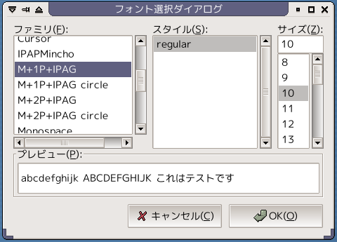
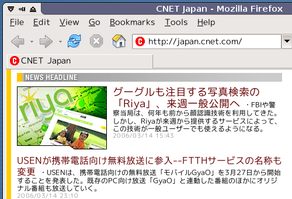
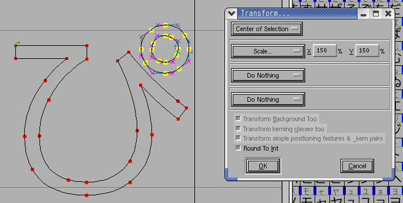
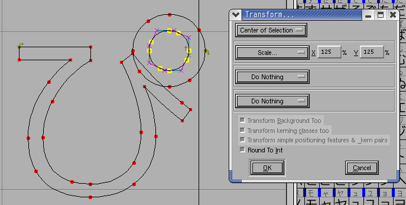
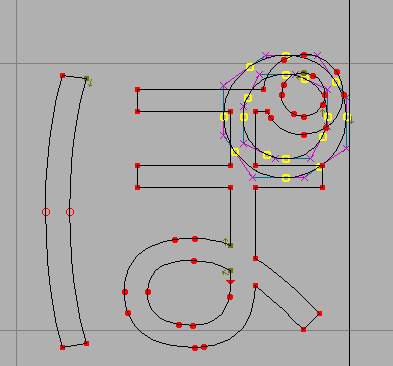
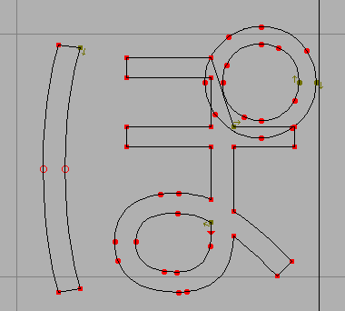
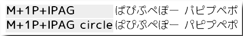
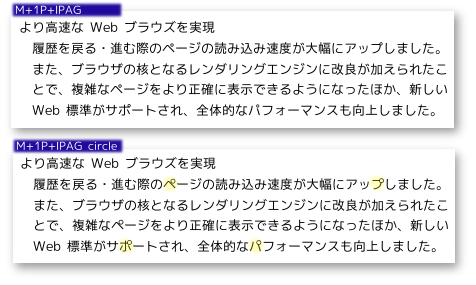

2006-03-15 M+ と IPAフォントの合成フォント配布
[font][release] M+ と IPAフォントの合成フォント配布

M+ (エムプラス) フォント という高品質で、かつ無料配布されているフォントがあります。 アウトラインフォントは作成途中のため、まだ漢字がありません。
ですが、これまた無料の IPAフォント の漢字と 組み合わせる ことで 文字がすべてそろった日本語TrueTypeフォントを作れます。
でもこの「組み合わせる」という作業がなかなかたいへんです。 FontForge というソフトは Windows では動かすのはいろいろ手順があるし…。 Debian GNU/Linux 3.1 では FontForge のバージョンが古くて作業できなかったり…。
そこで、どちらも改変・再配布が許されているフォントなので、 組み合わせたフォントをここで再配布します。
ライセンス
IPAフォントおよびM+フォントのライセンスに準じます。
ダウンロード
IPAフォントの再配布条件に従い、 オープンプリンティングシステム用 HP Vector Driverに同梱して配布しています。改変前のIPAフォントも含んでいます。
opfc-ModuleHP-1.1.1_withIPAFonts_and_Mplus-20060315.tar.gz
(14.3Mバイト)
Windows で tar.gz 形式のファイルを展開するには、Lhaz などを使ってください。
このファイルを展開すると いろいろファイルが入っていますが、
fonts というフォルダの中に TrueType フォントが入っています。
3 種類のフォントがあります。
最初から IPAフォントに入っているもの
ipag.ttfIPAゴシックipagp.ttfIPA Pゴシックipagui.ttfIPA UIゴシックipam.ttfIPA明朝ipamp.ttfIPA P明朝
アーカイブにもとから含まれていたもの。なにも手を加えていません。
M+フォント (ひらがな、カタカナ、英数字) ＋ IPAゴシック (漢字)
M+1P+IPAG.ttf直線処理と曲線の組み合わせが特徴的な M+ 1M+2P+IPAG.ttfゴシック体の字形を残しつつ、現代的な表情を見せる M+ 2
M+フォントページの IPAフォントとの合成 の手順どおり、スクリプトで生成したものです。 なにも手を加えていません。
M+フォント + IPAゴシック をこちらで一部改変して、濁点と半濁点を判別しやすくしたもの
M+1P+IPAG-circle-Regular.ttfM+2P+IPAG-circle-Regular.ttf
2.のフォントをFontForgeというソフトで読み込んで一部手を加えました。後述の半濁点巨大化処理をしたものです。ビットマップは含んでいません。
ブラウザフォントに指定すると、こんな感じになります。

英数字もキレイなのがいいですよね。
謝辞
M+フォント製作者のかたがた、IPAフォント製作者のかたがた、ありがとうございます！
配布形式に関しては、IPAモナーフォントも参考にしました。
詳細
この TrueType フォントの作成環境は以下になります。
作成環境
| OS | Red Hat Linux 9 |
|---|---|
| ソフト | FontForge 20060209 RPM版を使用 |
| ソース | mplus_outline_fonts 2006-03-13 20:50 from CVS (TESTFLIGHT 011 と同じソース使用) |
| オープンプリンティングプロジェクト ModuleHP 1.1.1 |
動作確認
- WindowsXP
- Windows2000
- Windows98
- Red Hat Linux 9
- Debian GNU/Linux 3.1
改変フォント
このアーカイブには、半濁点巨大化の変更をおこなったフォント (フォント名に 'circle' が入ります) も同梱しました。
小さいサイズで表示したとき、濁点と半濁点の区別がつくフォントがほしくて作成しました。 印刷には向いてないと思います。あくまでディスプレイ表示向けです。
フォント改変手順
半濁点巨大化の変更手順についての記録です。
最初は SVG ファイルを改変しましたが、
そうするとスクリプトで TrueType生成中にエラーになったため、 FontForge で TrueTypeフォントを読み込んで作業しました。
半濁点は 150% に拡大しました。

このままだと半濁点の部分だけ、フォントの線幅まで拡大してしまったので、 半濁点の輪郭内側部分だけ、125% でさらに拡大すると、線幅がほぼ元と同じに戻りました。

そうやってできた半濁点を、文字の上にコピーしていきます。

元からある半濁点が文字と一体化している場合は、このように半濁点の円の中に はみでないよう、スプライン曲線をつなぎなおしました。

文字の線が重なっている部分がありますが、あまり手をかけていないのでこのままになっています。 こういう重複を残しておくとまずいのかな？
ほかにも音引き(ー)も、横棒と見分けがつくように微妙に左端を上げました。

改変前のフォントとの比較画像です。

20日にFedora core5がリリース
されますが、なぜか一足早く公開されていたので、Vmware Server ベータ(最新版)にインストールしてみた。因みにインストール時の仮想マシンはRed ...
IPAフォントについて Knoppix debian-usersでの反応 GRASS Open Printing Project Efont-devel スラッシュドット ジャパン Debian debian-devel その他、ttf-ipafonts-installerなど OpenOffice.orgのja-dev (FreeBSDの状況) KDE+K3b+IPAプロポーショナルフ...
M と IPAフォントの合成フォント配布 - きりんシステム ダイアリー(2006-03-15) M+フォントとIPAフォントを組み合わせたTrueTypeフォントです． とても美しい見栄えです． ちょっと丸すぎる感じもありますが・・・ 美しいフォントを使うと，文書全体が美しくなります． 文..
ビットマップフォントでだいぶん以前からお世話になっているM+フォントですが、IPAフォントと合成したバイナリを配布してくださっている方がい他ので、さっそくインストール。とても素敵です。 思わず2年ぶりくらいにデスクトップをいじりたい気持ちになり、Xfce4をemerge..
- 481 http://b.hatena.ne.jp/
- 414 http://b.hatena.ne.jp/entry/http://kirinsystem.net...
- 193 http://b.hatena.ne.jp/hotentry
- 138 http://unixluser.org/diary/
- 103 http://mplus-fonts.sourceforge.jp/mplus-outline-fo...
- 101 http://ime.st/kirinsystem.net/diary/?date=20060315...
- 99 http://b.hatena.ne.jp/add?mode=confirm&title=M %u...
- 77 http://d.hatena.ne.jp/kinneko/
- 75 http://kikuz0u.x0.com/td/
- 73 http://ja.reddit.com/
- 59 http://0073h.ioport.net/
- 54 http://piro.sakura.ne.jp/latest/blosxom.cgi/review...
- 53 http://piro.sakura.ne.jp/latest/blosxom.cgi
- 48 http://piro.sakura.ne.jp/latest/
- 47 http://d.hatena.ne.jp/kinneko/20060327/p6
- 46 http://www.hatena.ne.jp/
- 36 http://www.linet.gr.jp/ML/plamo/200603/msg00130.ht...
- 36 http://mplus-fonts.sourceforge.jp/cgi-bin/blosxom....
- 32 http://img.simpleapi.net/
- 29 http://1470.net/mm/
- 28 http://beve.qee.jp/article.php?id=267
- 27 http://b.hatena.ne.jp/hotentry?mode=daily
- 22 http://labs.ceek.jp/hbnews/
- 20 http://www.google.co.jp/ig?hl=ja
- 18 http://d.hatena.ne.jp/hirose31/
- 17 http://po3a.blogspot.com/2006/03/fedora-core-5.htm...
- 16 http://b.hatena.ne.jp/hotentry?
- 14 http://kikuz0u.x0.com/td/?date=20060330
- 14 http://buxus.s31.xrea.com/pukiwiki/pukiwiki.php?IP...
- 12 http://cheebow.sub.jp/chemt/?1143579607
- 10 google検索(青色申告 "申告ソフト" 比較)
- 9 http://dm04.dt.u-tokai.ac.jp/~kakizaki/mt/archives...
- 9 http://1470.net/mm/recent.html?&limit=50&page=2
- 8 http://www.google.com/ig
- 8 http://mplus-fonts.sourceforge.jp/cgi-bin/blosxom....
- 8 http://kirinsystem.net/
- 8 http://hsj.jp/
- 8 http://d.hatena.ne.jp/kinneko/?of=4
- 8 http://b.hatena.ne.jp/t/フォント
- 8 http://akid.s17.xrea.com/p2ime.php?enc=1&m=1&url=h...
- 7 google検索(ipa ゴシック windows)
- 7 google検索(VirtualRD)
- 7 http://d.hatena.ne.jp/hirose31/20060329/1143610423...
- 7 http://b.hatena.ne.jp/hotentry?mode=daily&date=200...
- 7 http://b.hatena.ne.jp/hotentry?cname=elec
- 7 http://1470.net/mm/mylist.html/76
- 6 http://www5d.biglobe.ne.jp/~y0ka/2006-03.html
- 6 http://www.kt.rim.or.jp/~msx-006/diary.html
- 6 http://www.kk.iij4u.or.jp/~kondo/recent/index.html...
- 6 http://www.google.com/ig?hl=ja
- 6 google検索(CGI スケジューラ フリー)
- 6 msn検索(南北問題)
- 6 http://numerous.org/bazooka/antenna/
- 6 http://ja.reddit.com/goto?id=3j8f
- 6 http://d.hatena.ne.jp/u-ichi/20060329/1143569277
- 6 http://d.hatena.ne.jp/feilung/
- 6 http://cheebow.sub.jp/chemt/
- 6 http://b.hatena.ne.jp/wacky/フォント/
- 6 http://b.hatena.ne.jp/boozerboozer/
- 5 http://www.suzukike.net/index.php/archives/822
- 5 google検索(フリースケジュール)
- 5 http://www.google.com/reader/view/
- 5 google検索(CGI スケジューラ フリー)
- 5 google検索(vmware fedora)
- 5 google検索(flac wav)
- 5 http://www.google.co.jp/ig
- 5 http://wiki.osdev.info/index.php?フォント
- 5 http://unixluser.org/diary/?200603c
- 5 msn検索(坂本龍一)
- 5 http://labs.ceek.jp/hbnews/list.cgi?c=1
- 5 http://labs.ceek.jp/hbnews/list.cgi
- 5 http://ja.reddit.com/user/yysk/saved
- 5 http://ja.reddit.com/rising
- 5 http://ja.reddit.com/new
- 5 http://d.hatena.ne.jp/maple_magician/?of=9
- 5 http://b.hatena.ne.jp/tks_period/フォント/
- 5 http://1470.net/mm/search?genre=font&autogenre=1
- 4 google検索(vmware fedora)
- 4 google検索(キーボード指配置)
- 4 google検索(fedora 解像度)
- 4 google検索(fedora core4 インストール)
- 4 google検索(MySync)
- 4 google検索(IPAフォント)
- 4 google検索(vmwaretools 解像度)
- 4 google検索(EssentialPIM)
- 4 google検索(文字 計測 使用頻度)
- 4 google検索(きりんシステム)
- 4 http://stayple.net/bookmark/2006/03/28/1698
- 4 http://search.nifty.com/cgi-bin/search.cgi?cflg=検...
- 4 msn検索(Fedora Coreのインストール)
- 4 http://piro.sakura.ne.jp/latest/?page=2
- 4 http://page2.xrea.jp/r.p?u=http://kirinsystem.net/...
- 4 http://mplus-fonts.sourceforge.jp/cgi-bin/blosxom....
- 4 http://d.hatena.ne.jp/xifi/
- 4 http://d.hatena.ne.jp/u-ichi/
- 4 http://d.hatena.ne.jp/shalico/
- 4 http://d.hatena.ne.jp/moro/20060331/1143818972
- 4 http://d.hatena.ne.jp/hitode909/
- 4 http://d.hatena.ne.jp/feilung/20060329
- 4 http://cheebow.info/chemt/
合成作業お疲れ様です！
トラバに失敗したようなので^^;、コメントにて失礼します。
M+1P+IPAG-circle-Regular.ttf をWinXP環境のfirefox上で使わせていただいています。
http://d.hatena.ne.jp/maple_magician/20060315/1142426368
標準モードでスムージングしているので、始めは「なんだか文字が薄いなぁ……」という気もしていましたが^^;、3日たった現時点では「見やすくて良いじゃん！」と評価がひっくり返りました。
半濁音の混じった頁を見ると、普段のフォント群とはちょっと違った表情……「可愛さとシンプルさの共存」が見て取れるのは面白いですし、それで居て可読性が高いので「読み取りにストレスを感じない」のも良いですね。
こんちは！
文字のデザインはほんといいですよね。M+の作者さんのセンスがいいんですね。
わたしも仕事場では Windows2000のアンチエイリアス(＝WindowsXPの標準モード)で使っていて、文字が薄くてぼんやりしてるなあと感じながらも使っています。文字をすこし大きくする(18ポイントとか)と見やすくなるかも。WindowsXPの'ClearType'モードの場合は逆に文字サイズが大きいとギザギザが目立つので小さくしたほうがいいですね。
でも、TrueTypeのレンダリングに関していえば Linuxのほうが Windows2000/XPよりもキレイなんですよ〜。WindowsVistaでは改良されるといいな、と思いつつも待ちきれないので、Windows2000にVMwarePlayer入れて、そこにLinux動かしてFirefoxを動かす、というのを今 試しています。
無料でできるので、またブログでやりかた書くかもです。
ブラウザに入れてみて、半濁音の視認性が凄くよくなりました！
ただ、私も少々字が薄く感じているのと、MSPゴシックと同じ文字間隔でないと"いろいろ"面倒なので、
微妙な文字間隔の改善とメーラーやテキストエディタで使いたいので等幅フォントも、と独り言をつぶやいてみます。
カタカナAppleの.AquaKana使ってない？
権利関係大丈夫？
>> にちゃんねら〜 さん
等幅フォント版については、今のままで日本語部分は等幅なので、
欧文(英数字)部分だけ用意すればできますね。
M+ の作者さんは作る気ないかな？
>> にちゃんねら さん
カタカナは M+ の作者さんが下記のように細かい調整を何度も繰り返して数年がかりで作成されたものです。
http://mplus-fonts.sourceforge.jp/cgi-bin/blosxom.cgi/2004/09/index.html
権利関係に問題はありませんよ。
M+2P+IPAG-circle をDLして使わせてもらっていますが、M+2P+IPAG-circle-Regular をブラウザフォントにしていると特定のページでブラウザが落ちてしまいます。
自分で確認出来たのは
http://mixi.jp/view_bbs.pl?id=1997868&comm_id=303639&page=all
このページだけですが、他のフォントでは表示されるけどブラウザフォントをM+2P+IPAG-circleにするとエラーが出てブラウザが落ちてしまいます。（M+2P+IPAG-circleをブラウザフォントにしておいて上記ページを表示させようとしても同様）
フォントが原因でブラウザが落ちているのかどうかもハッキリとは分かりませんがとりあえず報告させて頂いておきます。
>>ザックさん
OSとブラウザを教えてください。WindowsXPのInternetExplorer6.0ですか？
あと mixi はアカウントなくて見れないので、そことは別にブラウザクラッシュを再現できるページがあれば助かります。
MacOSX 10.4.5ではインストールしようとするとFontBookに断られてしまいました。FontBookはMacOSXのFont管理ユーティリティです。
>>fu7mu4さん
わたしは MacOS X ユーザではないので確認はできませんけど、
http://mplus-fonts.sourceforge.jp/mplus-outline-fonts/download.html#ipag
の下のほうに
「Mac OS X 上でインストールする際に警告画面が表示される場合もありますが、チェック欄を埋め、強制的にインストールする事でご利用いただく事ができます。」
と書いてあります。
はてなブックマークのコメント
http://b.hatena.ne.jp/entry/http://kirinsystem.net/diary/?date=20060315
にも、強制的に入れたら使えたよ、という声がありますね。
チェックボックスを埋めれば、強制的にインストールボタンを押す事ができます。もちろん保証はできませんが、別に問題無く使用する事ができます。
また Mac OS X にオリジナルの TESTFLIGHT 011 をインストールすれば、Safari などで太字も含めて自動的に漢字補完・表示してくれます。
OSはWindowsXP、ブラウザはInternetExplorer6.0です。
確認してみたのですが
(´^ิ^ิ｀)
この顔文字の目の部分の文字があると
（目の部分だけ上手くコピペする事が出来ませんでした）
M+2P+IPAG-circleで表示した時にエラーが出てブラウザが落ちてしまうようです。
>>ザックさん
わざわざ調べていただき、どうもありがとうございます。
こちらで試したところ再現しました。
フォントは、「MS Pゴシック」「IPAゴシック」や M+ TESTFLIGHT011 などでは再現しません。
「M+1P+IPAG」「M+1P+IPAG circle」「M+2P+IPAG」「M+2P+IPAG circle」などの合成フォントで、
かつ下記の状況のときに再現しました。
テストケース1: test1-tai-font.html
「ิ」の文字だけで出てきたときは、ブラウザはクラッシュしません。
テストケース2: test2-tai-font.html
「^」と「ิ」の文字が連続して出てきたときに、WinXP+IE6.0 の環境と上記のフォントで 100% ブラウザクラッシュします。
(最初表示させたときはページに何も表示されず、リロードすると「問題が発生したため、iexplore.exe を終了します」ダイアログが出てくる)
Win2000+IE6.0, Win98SE+IE5.0, Win+Firefox1.5 だとクラッシュしませんでした。
テストケース3: test3-tai-font.html
「ิ」の文字と「」または「｀」が連続して出てきたときにはブラウザはクラッシュしません。
ここで問題になっている「ิ」という文字は、'U+0E34 THAI CHARACTER SARA I' というタイ語の文字です。
http://kirinsystem.net/work/20060315/thai-saraI-win2000.png
よく知らないのですが、リガチャー(連結文字) と呼ばれるものかもしれません。
で、バグは見つかりましたが、どうすれば直るのか見当つきません。
合成フォントの作り方に問題があるのか、合成フォント作成に使っている FontForge にバグがあるのか……。
もう少し検討してみます。
詳しい検証ありがとうございます。
自分にはフォントの知識はありませんが、もしかするとブラウザやWindowsの問題なのかも知れませんね…
読みやすくていいフォントだから使い続けたいですし、当面はFirefoxへ乗換えて使い続けようと思います。
(追記 2006/04/27版で修正しました。IE6.0でも使用できます。)